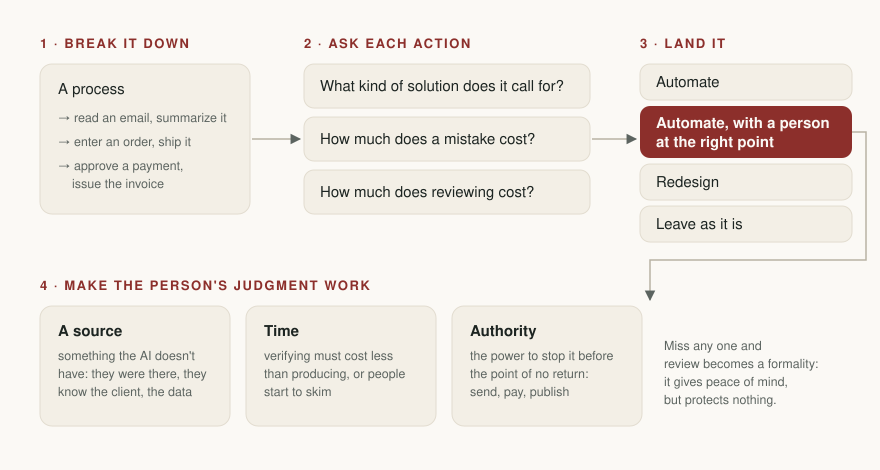

A method · Working version
Before asking "what can AI do?", ask "how much does it cost to get it wrong, and where do we need to be to prevent it?"
The Matrix comes out of the essay The Rising Cost of Judgment. It is deliberately simple: it is meant to be used in a meeting with the people who run a process, not by a specialist alone.

Not "automate accounts payable", but concrete actions: read an invoice, match it to a purchase order, approve the payment, send it. Each action gets its own answer; most processes end up as a mix.
| Outcome | Typically when |
|---|---|
| Automate | A mistake is cheap or caught downstream, and checking the result is quick. |
| Automate, with a person at the right point | A mistake is expensive, but there is a step before the point of no return where reviewing is cheap and decisive. |
| Redesign | Reviewing would cost about as much as doing the work, so the savings vanish or people start to skim. Change the process before automating it. |
| Leave as it is | The action depends on judgment that no reviewer could cheaply verify, or automating it buys too little. |
The table is a guide, not a formula. The real goal is the second row: finding the exact place in each process where you can't let go of human judgment.
Putting someone in the loop guarantees nothing by itself. Judgment needs three conditions; if one is missing, review becomes a formality.
In an AI video production line, the author first reviewed at the end: "make me a video", then fix what he didn't like. Fixing something in the finished animation cost about $7; the same change at the storyboard cost about $1.20. Asking the three questions moved the person to the idea, the hook and the storyboard, and let the machine handle voice sync, animation code and rendering alone.
| Action | Solution | Cost of a mistake | Cost to fix at this stage | Outcome |
|---|---|---|---|---|
| Pick the idea and the hook | AI proposes, person decides | High: a flat hook sinks the video | Not measured | Person at the right point |
| Storyboard and test shots | AI | Medium | ~$1.20 | Person at the right point |
| Animate the final video | AI | Medium | ~$7 to redo | Automate, after the storyboard is approved |
| Sync voice, render | Script, no AI | Low | Not measured | Automate |
The time and cost of human review were not measured in this case.
Illustrative reading of the case described in the essay
See the system itself: ai-video-factory.
Working version The Matrix has been applied to the author's own systems and to synthetic cases. It is shared as a thinking tool, not as a validated standard.